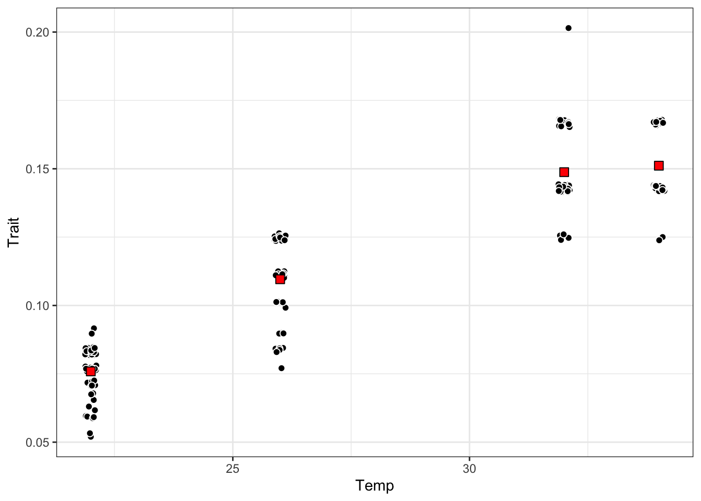
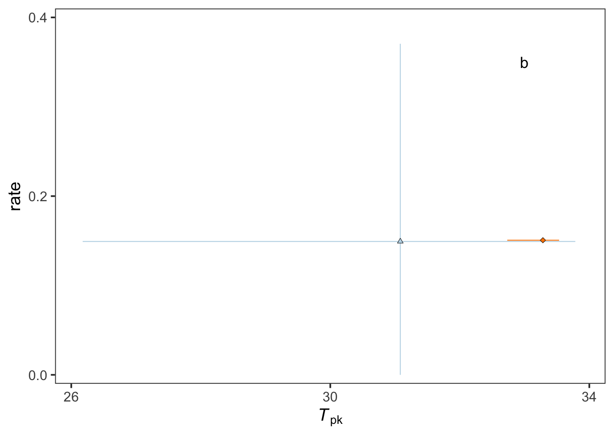
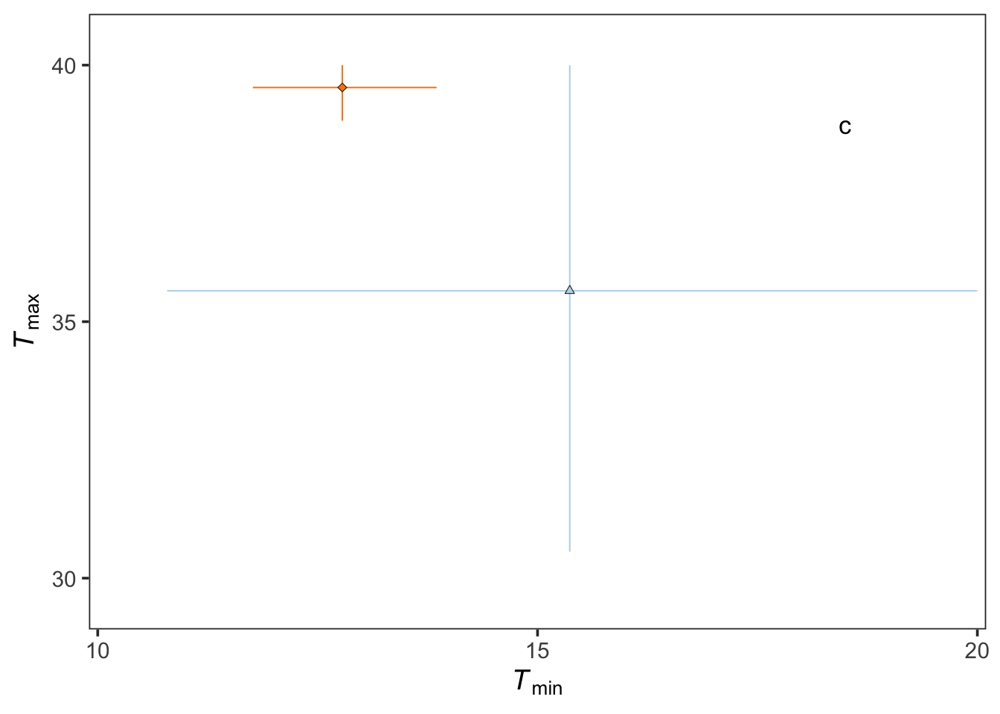

Show code
library(httr)
library(jsonlite)
library(tidyverse)
library(nimble)
library(bayesTPC)
library(coda)
library(HDInterval)
library(parallel)
library(doParallel)
library(patchwork)
library(cowplot)
library(EnvStats)Thermal Performance Curve Fitting Using VectorByte Dataset 578
This page downloads VectorByte dataset 578, wrangles development-rate data, fits Bayesian thermal performance curve (TPC) models using bayesTPC/nimble, and reproduces the multi-panel figure used as Fig. 1.
Important: The MCMC is computationally heavy. For public repos / GitHub Pages, the recommended workflow is:
run_mcmc <- TRUE (creates results/drate_output_models.rds)results/ outputsrun_mcmc <- FALSE for fast website renderslibrary(httr)
library(jsonlite)
library(tidyverse)
library(nimble)
library(bayesTPC)
library(coda)
library(HDInterval)
library(parallel)
library(doParallel)
library(patchwork)
library(cowplot)
library(EnvStats)# Set TRUE only when running locally to generate the cached model outputs
run_mcmc <- FALSE
rds_file <- "results/drate_output_models.rds"
dir.create("results", showWarnings = FALSE)This replaces the full interactive API client. It downloads the dataset cleanly and returns a dataframe.
get_vectorbyte_dataset <- function(id, useQA = FALSE) {
base <- paste0("https://vectorbyte", ifelse(useQA, "-qa", ""), ".crc.nd.edu")
url <- paste0(base, "/portal/api/vectraits-dataset/", id, "/?format=json")
raw <- GET(url)
stop_for_status(raw)
fromJSON(content(raw, "text"), flatten = TRUE)[[1]]
}df <- get_vectorbyte_dataset(578)
# Optional check of structure
df %>% distinct(OriginalTraitName, Interactor1Temp, SecondStressorValue) OriginalTraitName Interactor1Temp SecondStressorValue
1 development time 22 55
2 development time 32 55
3 development time 22 110
4 development time 26 110
5 development time 32 110
6 development time 34 110
7 development time 22 165
8 development time 26 165
9 development time 32 165
10 development time 34 165
11 development time 22 220
12 development time 26 220
13 development time 32 220
14 development time 34 220
15 development time 26 55
16 development time 34 55# Mean curve
development_rate_mean <- df %>%
filter(SecondStressorValue == 165) %>%
group_by(Interactor1Temp) %>%
summarise(Trait = mean(1 / OriginalTraitValue), .groups = "drop") %>%
mutate(curve_ID = factor(1), Temp = Interactor1Temp)
# Individual observations
development_rate_individuals <- df %>%
filter(SecondStressorValue == 165) %>%
mutate(curve_ID = factor(2),
Temp = Interactor1Temp,
Trait = 1 / OriginalTraitValue)
# Combined dataset
drate_dat <- bind_rows(development_rate_mean, development_rate_individuals)p_raw <- ggplot() +
geom_jitter(data = development_rate_individuals,
aes(Temp, Trait),
size = 2, shape = 21, fill = "black", col = "white",
width = 0.12) +
geom_point(data = development_rate_mean,
aes(Temp, Trait),
size = 3, shape = 22, colour = "black", fill = "red") +
theme_bw()
p_raw
The exponential model used to describe temperature-dependent development time (Equation 2 in the main text) is not unimodal and does not have defined values for \(T_\mathrm{min}\), \(T_\mathrm{pk}\), \(B_\mathrm{pk}\), or \(T_\mathrm{max}\). To facilitate direct comparison with previous studies, we therefore fitted the standard Brière thermal performance curve model to inverted development times (i.e. development rate, \(1/\alpha\)).
The Brière model was fitted as implemented in the bayesTPC package in R (Brière et al. 1999; Sorek et al. 2025).
\[ \label{eq:BriereModel} \frac{1}{\alpha(T)} = q \cdot T \cdot (T - T_\mathrm{min}) \cdot \sqrt{(T_\mathrm{max} - T)} \cdot \mathbb{I}(T > T_\mathrm{min}) \cdot \mathbb{I}(T < T_\mathrm{max}) \]
Here, \(T\) is temperature (°C), \(T_\mathrm{min}\) is the lower thermal limit at which rates become zero, \(T_\mathrm{max}\) is the upper thermal limit at which rates become zero, and \(q\) is a scaling parameter that determines the maximum rate.
Peak temperature (\(T_\mathrm{pk}\)) and peak performance (\(B_\mathrm{pk}\)) were not explicit parameters of the model and were therefore estimated numerically from posterior samples of each fitted thermal performance curve. These quantities were summarized using posterior medians and Highest Posterior Density (HPD) intervals.
iterations <- 50000
burnin <- 10000
temps <- seq(0, 50, length = 1000)data_list <- split(drate_dat, drate_dat$curve_ID)
if (run_mcmc) {
# Parallel backend (adjust cores according to your system)
cl <- makeCluster(min(10, detectCores()))
registerDoParallel(cl)
drate_output_models <- foreach(i = seq_along(data_list)) %dopar% {
dat <- data_list[[i]]
lf.data.bTPC <- list(Temp = dat$Temp, Trait = dat$Trait)
library(nimble)
library(bayesTPC)
b_TPC(data = lf.data.bTPC,
model = "briere",
priors = list(T_min = "dunif(10,20)",
T_max = "dunif(30,40)"),
inits = list(T_min = 15, T_max = 35),
thin = 5,
samplerType = "AF_slice",
burn = burnin,
niter = iterations)
}
stopCluster(cl)
saveRDS(drate_output_models, rds_file)
} else {
if (!file.exists(rds_file)) {
stop(
"Missing cached models at: ", rds_file, "\n",
"Run locally once with run_mcmc <- TRUE to create it, then commit results/."
)
}
drate_output_models <- readRDS(rds_file)
}pars <- list()
fits <- list()
drateHPD <- list()
for (i in seq_along(drate_output_models)) {
m <- drate_output_models[[i]]
samples <- m$samples
hpds <- HPDinterval(samples)
# Prediction grid
mybriere <- get_model_function("briere")
l <- nrow(samples)
pred_mat <- matrix(NA, nrow = l, ncol = length(temps))
for (k in 1:l) {
pred_mat[k, ] <- mybriere(temps,
T_max = samples[k, 1],
T_min = samples[k, 2],
q = samples[k, 3])
}
# HPD intervals across temperatures
HPDtemp <- sapply(seq_along(temps), function(j) {
interval <- HPDinterval(mcmc(pred_mat[, j]))
c(lower = interval[1], upper = interval[2])
})
drateHPD[[i]] <- as.data.frame(t(HPDtemp)) |>
mutate(Temp = temps,
curve_ID = factor(i),
Trait_lwr = lower,
Trait_upr = upper) |>
select(Temp, Trait_lwr, Trait_upr, curve_ID)
# Fit summaries
fit_sum <- predict(m, temp_interval = temps)
fit_sum$temp_interval <- NULL
fits[[i]] <- bind_cols(Temp = temps, fit_sum,
curve_ID = factor(i),
species = "Aedes aegypti")
# Peak estimates
Tmax_vals <- samples[,1]
Tmin_vals <- samples[,2]
Tpk_samples <- temps[apply(pred_mat, 1, which.max)]
Bpk_samples <- apply(pred_mat, 1, max)
pars[[i]] <- tibble(
curve_ID = factor(i),
Tmin_mean = mean(Tmin_vals),
Tmin_lwr = hpds[2,1],
Tmin_upr = hpds[2,2],
Tmax_mean = mean(Tmax_vals),
Tmax_lwr = hpds[1,1],
Tmax_upr = hpds[1,2],
Tpk_median = median(Tpk_samples),
Tpk_lwr = HPDinterval(as.mcmc(Tpk_samples))[1],
Tpk_upr = HPDinterval(as.mcmc(Tpk_samples))[2],
Bpk_median = median(Bpk_samples),
Bpk_lwr = HPDinterval(as.mcmc(Bpk_samples))[1],
Bpk_upr = HPDinterval(as.mcmc(Bpk_samples))[2]
)
}
drateHPD_combined <- bind_rows(drateHPD)
fits_combined <- bind_rows(fits)
pars_combined <- bind_rows(pars)j1 <-
ggplot() +
scale_y_continuous(expression(plain(paste("development rate,"," day"^{-1}))),
limits =c(-.01,.41),
expand = c(0, 0),
breaks=seq(0,.4, by=.1)) +
scale_x_continuous(expression(plain(paste(" Temperature, ", degree, "C")))) +
# Plot HPD intervals using geom_ribbon
geom_ribbon(aes(Temp, ymin = Trait_lwr, ymax = Trait_upr, group = curve_ID, fill = curve_ID),
data = drateHPD_combined, alpha = 0.5, inherit.aes = FALSE) +
# Plot the fit lines
geom_line(aes(Temp, medians, group = curve_ID, colour = curve_ID),
data = fits_combined, linewidth = 0.2) +
# Plot points for curve_ID 1
geom_point(data = subset(drate_dat, curve_ID == 1),
aes(Temp, Trait, col = curve_ID, fill = curve_ID, shape = curve_ID),
stroke = .2, size = 3) +
# Plot points for curve_ID 2 with jitter
geom_jitter(data = subset(drate_dat, curve_ID == 2),
aes(Temp, Trait, col = curve_ID, fill = curve_ID, shape = curve_ID),
alpha = .3, width = .5, stroke = .2, size = 1) +
# Customize legend and other aesthetics
scale_shape_manual(name = expression(bold("")),
labels = c("averages", "individuals"),
values = c(24, 23),
guide = guide_legend(nrow = 2, ncol = 1,
direction = "horizontal",
title.position = "top",
title.hjust = 0.5)) +
scale_fill_manual(name = expression(bold("")),
labels = c("averages", "individuals"),
values = c("#bdd7e7", "#fb8501"),
guide = guide_legend(nrow = 2, ncol = 1,
direction = "horizontal",
title.position = "top",
title.hjust = 0.5)) +
scale_colour_manual(name = expression(bold("")),
labels = c("averages", "individuals"),
values = c("#000000", "#fb8501"),
guide = guide_legend(nrow = 2, ncol = 1,
direction = "horizontal",
title.position = "top",
title.hjust = 0.5)) +
theme_bw(base_size = 14) +
theme(legend.position = c(.255, .9),
text = element_text(face = 'plain'),
legend.background = element_rect(colour = "black", linewidth = 0.15),
axis.title.y = element_text(size = 14),
legend.title = element_text(size = 1),
legend.key.spacing.y = unit(.1, "cm"),
legend.text = element_text(size = 6.5),
legend.box.margin = margin(0, 0, 0, 0),
legend.key.height = unit(.1, "cm"),
legend.spacing = unit(1, "mm"),
panel.grid.major = element_blank(),
panel.grid.minor = element_blank()) +
# Annotate plot
annotate("text", x = 48, y = 0.35, label = 'a', size = 4.5)
j1
j2 <- pars_combined %>% mutate(curve_ID = factor(curve_ID)) %>%
ggplot()+
geom_linerange(aes(x=Tpk_median,xmin=Tpk_lwr,xmax=Tpk_upr,y=Bpk_median,
group=curve_ID, col=curve_ID),lwd=.35)+
geom_linerange(aes(y=Bpk_median,ymin=Bpk_lwr,ymax=Bpk_upr,x=Tpk_median,
group=curve_ID, col=curve_ID), lwd=.35)+
geom_point(aes(Tpk_median,Bpk_median,group=curve_ID,shape=curve_ID,fill=curve_ID), col="black",
alpha = 1, stroke=0.25, size=1.5) +
scale_x_continuous(name=expression(plain(paste(italic(T)[pk]))),
limits =c(25.75,34.25),
expand = c(0, 0),
breaks=seq(26,34, by=4))+
scale_y_continuous(name=expression(plain("rate")),
limits =c(-0.01,.41),
expand = c(0, 0),
breaks=seq(0,.4, by=0.2))+
theme_bw(base_size = 14)+
scale_shape_manual(name=expression(bold("")),
labels = c("averages", "individuals"),
values = c(24,23),
guide = guide_legend(nrow=2,ncol=1,
direction = "horizontal",
title.position = "top",
title.hjust=0.5))+
scale_fill_manual(name=expression(bold("")),
labels = c("averages", "individuals"),
values = c("#bdd7e7","#fb8501"),
guide = guide_legend(nrow=2,ncol=1,
direction = "horizontal",
title.position = "top",
title.hjust=0.5))+
scale_colour_manual(name=expression(bold("")),
labels = c("averages", "individuals"),
values = c("#bdd7e7","#fb8501"),
guide = guide_legend(nrow=2,ncol=1,
direction = "horizontal",
title.position = "top",
title.hjust=0.5))+
theme(legend.position = "none",
panel.grid.major = element_blank(),
panel.grid.minor = element_blank())+
annotate("text", x = 33, y = 0.35, label = 'b', size = 4.5)
j2
j3 <-
pars_combined %>% mutate(curve_ID = factor(curve_ID)) %>%
ggplot()+
geom_linerange(aes(y=Tmax_mean,ymin=Tmax_lwr,ymax=Tmax_upr,x=Tmin_mean,group=curve_ID, col=curve_ID),lwd=.35)+
geom_linerange(aes(x=Tmin_mean,xmin=Tmin_lwr,xmax=Tmin_upr,y=Tmax_mean,group=curve_ID, col=curve_ID),lwd=.35)+
geom_point(aes(Tmin_mean,Tmax_mean,group=curve_ID,shape=curve_ID,fill=curve_ID), col="black",
alpha = 1, stroke=0.25, size=1.5)+
scale_y_continuous(name=expression(plain(paste(italic(T)[max]))),
limits =c(29,41),
expand = c(0, 0),
breaks=seq(30,40, by=5))+
scale_x_continuous(name=expression(plain(paste(italic(T)[min]))),
limits =c(9.9,20.1),
expand = c(0, 0),
breaks=seq(10,20, by=5))+
theme_bw(base_size = 14)+
scale_shape_manual(name=expression(bold("")),
labels = c("averages", "individuals"),
values = c(24,23),
guide = guide_legend(nrow=2,ncol=1,
direction = "horizontal",
title.position = "top",
title.hjust=0.5))+
scale_fill_manual(name=expression(bold("")),
labels = c("averages", "individuals"),
values = c("#bdd7e7","#fb8501"),
guide = guide_legend(nrow=2,ncol=1,
direction = "horizontal",
title.position = "top",
title.hjust=0.5))+
scale_colour_manual(name=expression(bold("")),
labels = c("averages", "individuals"),
values = c("#bdd7e7","#fb8501"),
guide = guide_legend(nrow=2,ncol=1,
direction = "horizontal",
title.position = "top",
title.hjust=0.5))+
theme(legend.position = "none",
legend.title = element_text(size=1),
legend.text = element_text(size=6),
legend.key.height = unit(.2, "cm"),
legend.key.spacing.y = unit(.01, "cm"),
legend.key.width = unit(.3, "cm"),
legend.spacing = unit(.01, "cm"),
panel.grid.major = element_blank(),
panel.grid.minor = element_blank())+
annotate("text", x = 18.5, y = 38.85, label = 'c', size = 4.5)
j3
j4 <- j2 + j3 + plot_layout(ncol = 1)
j5 <- j1 + j4 + plot_layout(ncol = 2)
ggsave("results/example-of-averages-vs-individuals.pdf", j4,
width = 6.5, height = 6.5, units = "cm")
ggsave("results/panel-example-ave-vs-inds.pdf", j5,
width = 16, height = 7.75, units = "cm")
j5